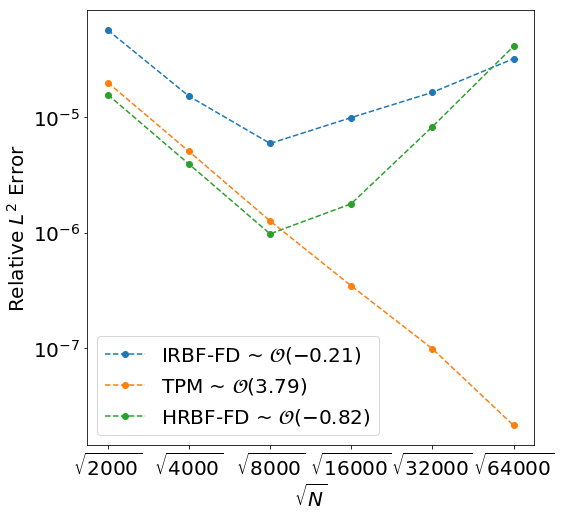
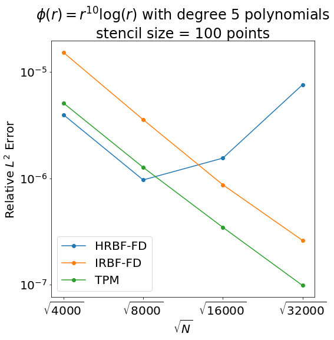

We reviewed our posters for SIAM CSE19.
- Sage's Tasks
- For Poster
- Code
- Writing
- Sage's List
- Error Plots
- Meeting Followup
- Fast OGr
- Updated Convergence Plots
- Steady State
- References
Sage's Tasks
For Poster
Solutions on a Torus- MLS on tangent-plane
Code
- Implement time-stepping.
Test surface diffusion methods on a torus.- Become familiar with Varun's repo.
Writing
- Write Radial Basis Function Article
- Write the theorem for exactness.
- Write RBF-FD article.
- Write RBF-FD Projection Method article.
- Write RBF-OGr article.
- Add local approximation to RBF Interpolation article.
Sage's List
Error Plots
The error plot below shows a superset of the data that was included in Sage's poster for approximation of the Laplace-Beltrami operator at the spiral points on the sphere using a stencil size of $k=100$ and appending with fourth degree polynomials. Something clearly goes wrong after $\sqrt{N}=8000$. This is also observed for fifth degree polynomials and for both fourth and fifth degree polynomials on the torus.
Since both methods fail at the same point and seem to follow the same decline in accuracy we susspected that they each have a common cause. At this point it was determined that there were two errors in Sage's implementation. The first was that he had been scaling the stencils by the same amount in all three dimensions, effectively scaling the stencil to the unit disk. Instead they should be scaled to fill $[-1,1]^3$. The second was that in the Schur complement method he had been using the default cuttoff of $1\times 10^{-15}$ as the tolerance for the SVD truncation. After fixing these the errors for Iterated RBF-FD seem to have been fixed but the errors for Hermite RBF-FD remain roughly the same as seen in the new plot below.
Meeting Followup
Fast OGr
We finally have Dr. Piret's paper on what we though was called Symmetric Orgthogonal Gradients[1]. We had susspected that the new method we began calling Hermite RBF-FD was significantly different, but now it seems it is only marginally different.
There are three main differences between the methods. The first and most straightforward is that we append polynomial terms and use PHS RBFs. The second is that they only enforce that $\frac{\partial f}{\partial \vec{n}}=0$ and do not enforce that $\frac{\partial^2 f}{\partial \vec{n}^2}=0$. Finally, they use the interpolant to approximate $P\cdot\nabla f$ and use iterated differentiation to find weights for the laplacian.
Updated Convergence Plots
The most up-to-date convergence plots appear below. In addition to the scaling the polynomial terms to $[-1,1]^3$ we have moved the derivative columns that appear in the Fast OGr interpolant out of the main block for the schure complement: $$ \left[ \begin{array}{c|c c} A & \mathcal{G}\phi & \mathcal{H}\phi & P \\ \hline \mathcal{G}\phi^T & \mathcal{H}\phi & \mathcal{GH}\phi & \mathcal{G}P \\ \mathcal{H}\phi^T & \mathcal{GH}\phi & \mathcal{HH}\phi & \mathcal{H}P \\ P^T & \mathcal{GH}P^T & \mathcal{G}P^T & \mathcal{H}P^T \\ \end{array} \right] $$ This had the added benefit of fixing the potential singularity when adding $\mathcal{G}\phi$ and $\mathcal{H}\phi$ as basis terms as seen for the plots using $r^9$ on the sphere, which was previously singular.
Sphere
The following plots show convergence on the sphere, where the function was the sum of seven gaussians.
Torus
The following plots show convergence on the sphere, where the function was the sum of seven gaussians.
Steady State
Sphere
The following plots show convergence for the steady state solution on the sphere.
Torus
The following plots show convergence for the steady state solution on the torus.
References
- Cécile Piret and Jarrett Dunn. Fast rbf ogr for solving pdes on arbitrary surfaces. AIP Conference Proceedings, 1776(1):070005, 2016. URL: https://aip.scitation.org/doi/abs/10.1063/1.4965351, arXiv:https://aip.scitation.org/doi/pdf/10.1063/1.4965351, doi:10.1063/1.4965351.